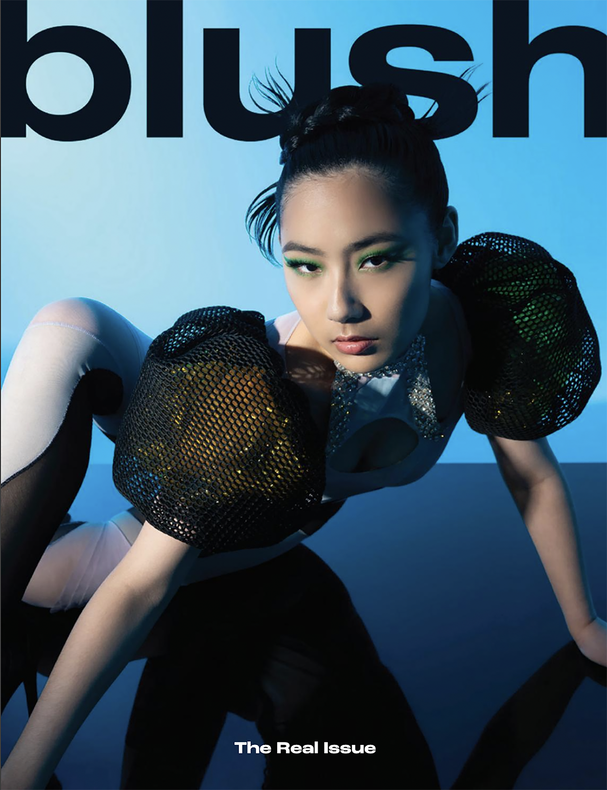
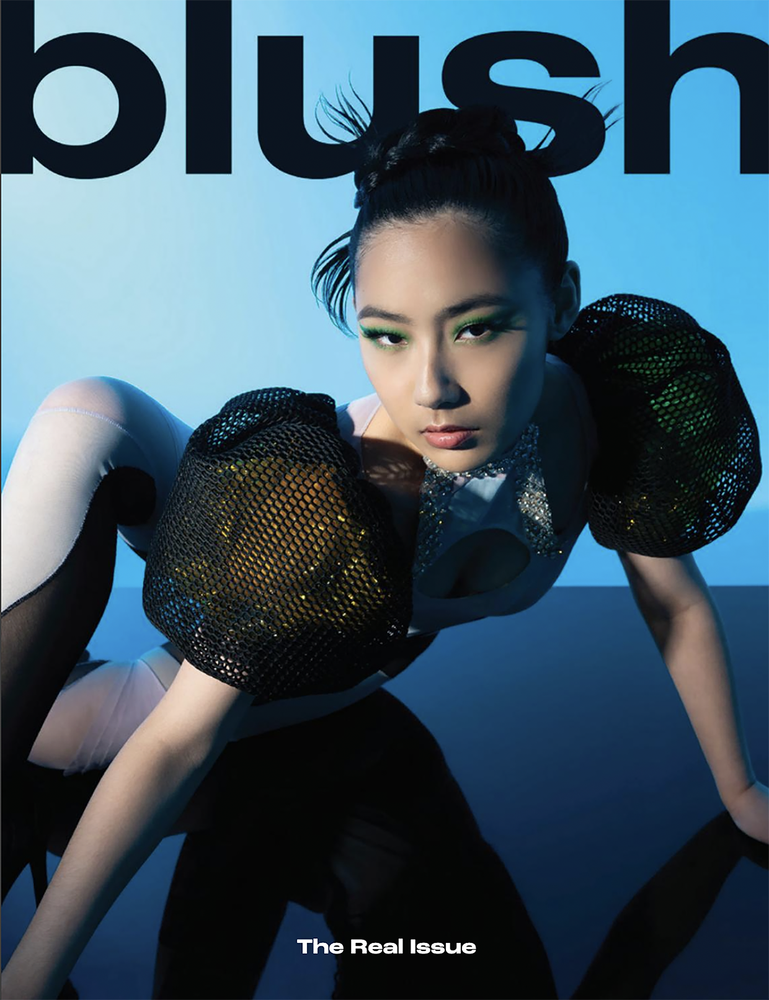
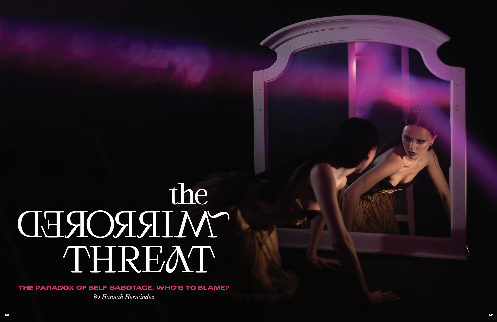
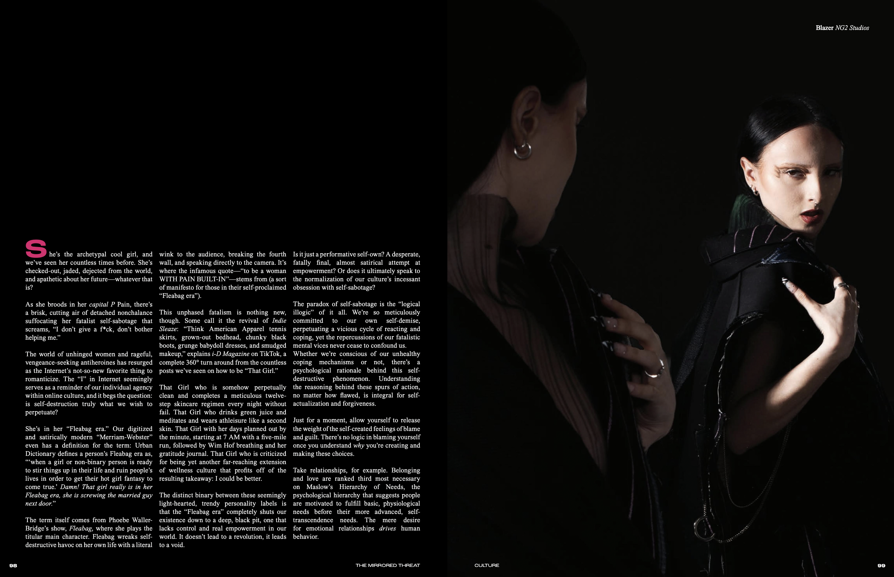
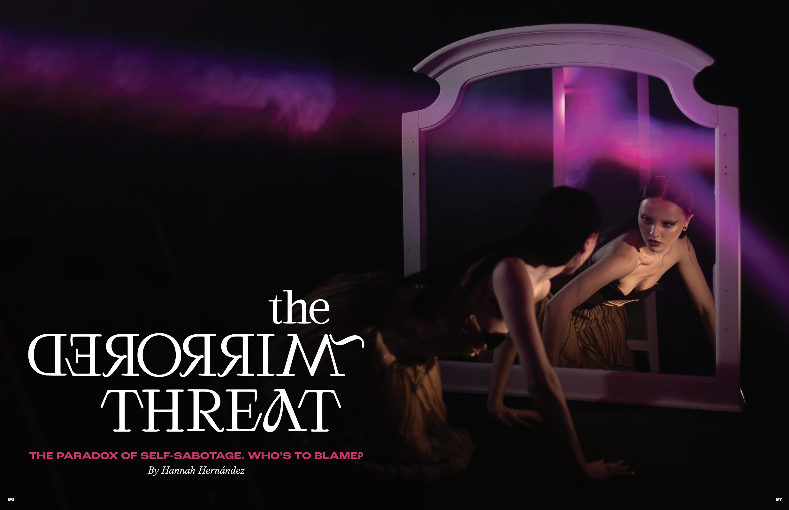
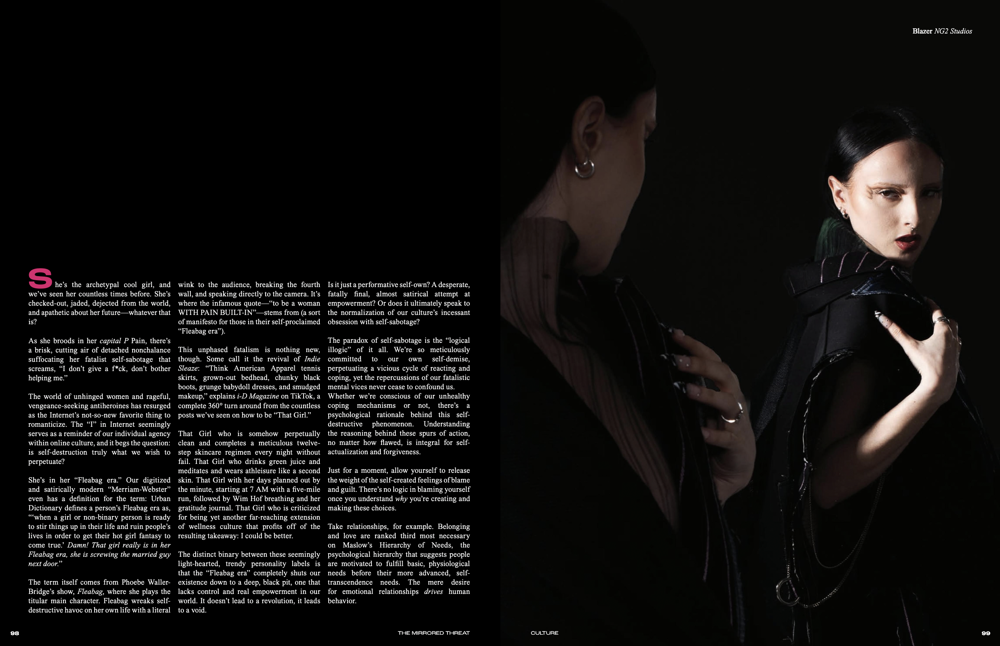
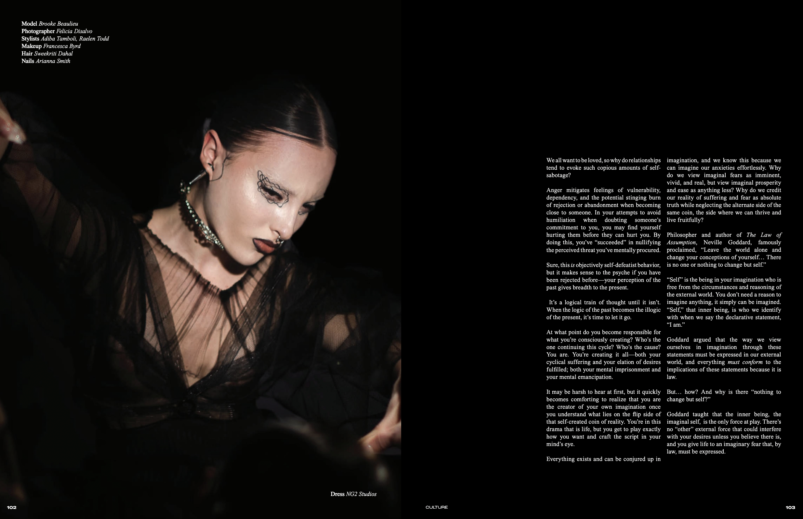
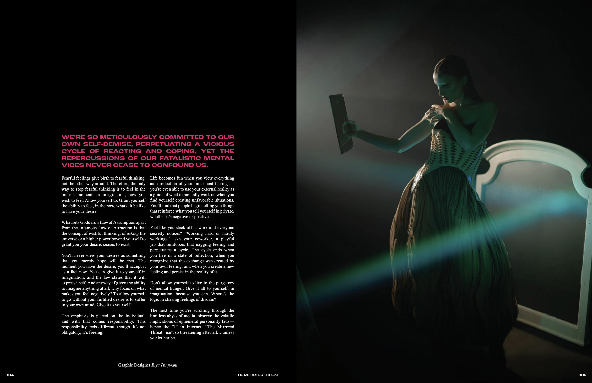
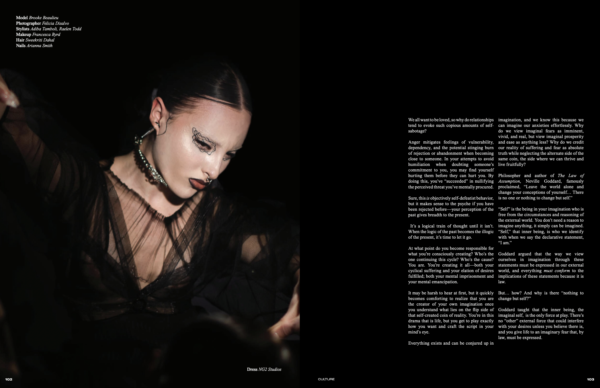
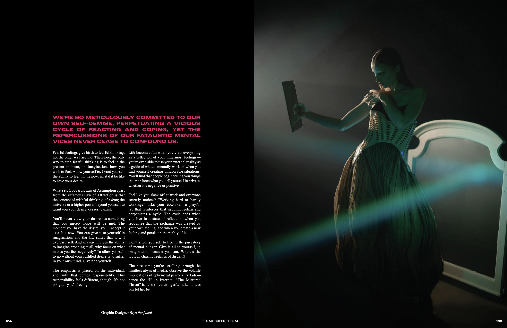

Blush Magazine S/S 2022, F/W 2021
For Blush S/S 2022, I was the Senior Culture Editor and worked closely with the seven writers I oversaw. Increased editorial productivity of a team of 7 editors by 80% in the first 3 months by creating and enacting an organized meeting structure and consistent cadence of team and 1:1 meetings. Strategically collaborated closely with Editor-In-Chief, managing editor and graphics team to ensure magazine content quality and timelines goals were achieved consistently.
I wrote a piece called The Mirrored Threat, which you can read below by scrolling and above by clicking the left image.
For Blush F/W 2021, I wrote a piece called Do You.
 



 



The Internet as Playground and Plant:
The Factory of Digital Voyeurism
A Foucauldian and Marxian Perspective on Free Digital Labor
A paper I wrote for my research seminar, The Politics of Work.
Humanitech
A Future World Project
A thoughtful exploration of how our world could operate through an Internet we've never known before.
A Conversation With AI on AI
How Human? Midterm Paper